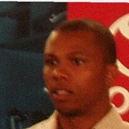

Anthony Puccio:Isaiah Whitehead on Sebastian Telfair & Lance Stephenson:
“I talk to those guys everyday. Just about what to do, what not to do. They help me out a lot.”

3 quotes about Sebastian Telfair from 3 players, coaches and executives, newest first. Each one links to its original source.
Anthony Puccio:Isaiah Whitehead on Sebastian Telfair & Lance Stephenson:
“I talk to those guys everyday. Just about what to do, what not to do. They help me out a lot.”
“We are pleased to have the opportunity to welcome Sebastian to the Thunder organization and Oklahoma City community,”
“Bassy (Telfair) works so hard on guards to turn them over. When you see a guy working like that, you can’t do anything but work as hard to match his energy. It’s a monkey-see, monkey-do thing.”